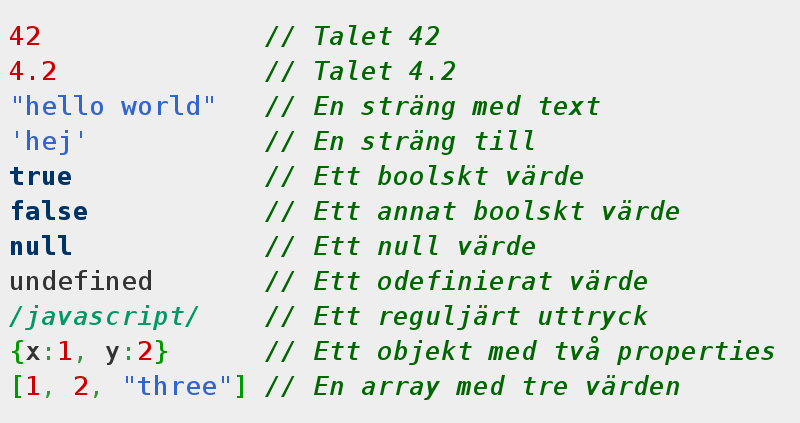
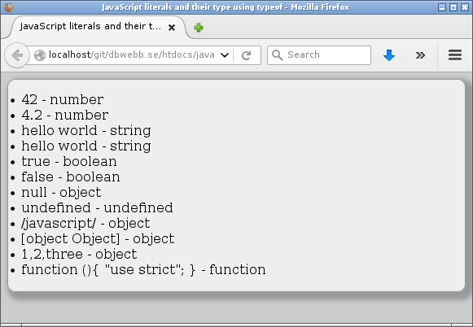

<!doctype html>
<html lang="sv">
<meta charset="utf-8" />
<title>Grunderna i JavaScript</title>

<!-- Mithril HTML Slideshow styles -->
<link href="css/mithril-slideshow.css" rel="stylesheet" />
<link href="css/theme-dark.css" rel="alternate stylesheet" title="Dark"/>
<link href="css/theme-light.css" rel="alternate stylesheet" title="Light" />

<!-- Code formatting using highlight.js -->
<link rel="stylesheet" href="css/default.css">
<link rel="stylesheet" href="css/tomorrow.css">
<script src="js/highlight.pack.js"></script>

<!-- Text formatting using Markdown through showdown.js -->
<script src="js/showdown.min.js"></script>


<!-- Here comes the slides in order -->
<script data-role="slide" data-markdown type="text/html">
#javascript kmom02
##Programmera med JavaScript
###Mikael Roos
</script>


<script data-role="slide" data-markdown type="text/html">
#Agenda
##Grunderna i språket JavaScript
</script>


<script data-role="slide" type="text/html">
<iframe style="background-color: #fff;" src="http://dbwebb.se/javascript/lekplats/boulder-dash-with-arrays/" width="1024" height="768" frameborder="0"></iframe>
</script>


<script data-role="slide" type="text/html">
<iframe style="background-color: #fff;" src="http://dbwebb.se/javascript/lekplats/gambling-roulette-using-functions/" width="1024" height="768" frameborder="0"></iframe>
</script>


<script data-role="slide" data-markdown type="text/html">
#Dåligt rykte
##The World's Most Misunderstood Programming Language

* Artikel från 2001 av Douglas Crockford
* Förklarar varför han tror att JavaScript fick dåligt rykte inledningsvis
* [Artikeln](http://javascript.crockford.com/javascript.html)

</script>


<script data-role="slide" type="text/html">
<iframe width="1024" height="768" src="https://www.youtube.com/embed/47Ceot8yqeI" frameborder="0" allowfullscreen></iframe>
</script>


<script data-role="slide" data-markdown type="text/html">
#Starten

* Skapades 1995 och introducerades i webbläsaren Netscape 2 året efter
* Kallades LiveScript, döptes om till JavaScript
* Sju månader senare kom Microsoft med JScript i IE3
* Netscape lämnade över till ECMA International
* Standarden blev ECMAScript
</script>


<script data-role="slide" data-markdown type="text/html">
#ECMAScript ECMA-262

* Edition 3 publicerades 1999
* Edition 4 övergavs
* Edition 5 publicerades 2009
* *Edition 6 publicerades 2015*
</script>


<script data-role="slide" data-markdown type="text/html">
#ES6

* Transpiler Babylon ES6 > ES5
* Klasser
* Moduler
* Promises
* Arrow syntax för funktioner
* Template strängar
</script>


<script data-role="slide" data-markdown type="text/html">
#Identifierare

En identifierare börjar med en bokstav a-z, A-Z, understreck _ eller dollartecken $ och följs därefter av bokstav a-z, A-Z, understreck _, dollartecken $ eller siffror 0-9.

</script>


<script data-role="slide" data-markdown type="text/html">
#Literaler

</script>


<script data-role="slide" data-markdown type="text/html">
#Literaler

</script>


<script data-role="slide" data-markdown type="text/html">
#Kika på koden

[Literaler](http://dbwebb.se/javascript/core/literals-and-their-type-using-typeof/)

</script>


<script data-role="slide" data-markdown type="text/html">
#Datatyper och objekt

* Grundtyper `number`, `string`, `boolean`, `Object`
* `Number`, `String`, `Boolean`, `Function`, `Array`, `RegExp` är specialisering av `Object`
* Samt `undefined` och `null`
</script>


<script data-role="slide" data-markdown type="text/html">
#`Number`

* Objektet `Number` innehåller utilities
* `Math.PI`, `Math.random`, ...
* `Nan` not a number
* Kika på [`Number`](https://developer.mozilla.org/en-US/docs/Web/JavaScript/Reference/Global_Objects/Number) och [`Math`](https://developer.mozilla.org/en-US/docs/Web/JavaScript/Reference/Global_Objects/Math)
</script>


<script data-role="slide" data-markdown type="text/html">
#`String`

* Använd literalen
* Konkatenera med + och +=
* Strängfunktioner i [`String`](https://developer.mozilla.org/en-US/docs/Web/JavaScript/Reference/Global_Objects/String)

</script>


<script data-role="slide" data-markdown type="text/html">
#Typkonvertering

* 1 + 1
* "1" + 1
* 1 + "1"
* 1 + true
* "1" + true
* true + 1 + NaN
</script>


<script data-role="slide" data-markdown type="text/html">
#Typkonvertering...

* Konvertera strängar till nummer med `parseInt()` och `parseFloat()`
* Konvertera nummer till sträng med `toString()`

</script>


<script data-role="slide" data-markdown type="text/html">
#`Boolean`

* Använd literalen
* false - false, 0, empty string (“”), NaN, null, undefined
* true - allt annat
* Omvandla till boolean med !!

</script>


<script data-role="slide" data-markdown type="text/html">
#Jämför värde och typ

* Skillnad mellan == och ===
* != och !==
</script>


<script data-role="slide" data-markdown type="text/html">
#`Function`
<pre data-code="c1"></pre>
</script>

<script id="c1" data-role="code" data-language="javascript" type="text/html">
// Traditionellt sätt, 
// att jämföra med C/C++, PHP.
function square (x) { 
    return x*x;         
}
val = square(x)
</script>


<script data-role="slide" data-markdown type="text/html">
#`Function`
<pre data-code="c2"></pre>
</script>

<script id="c2" data-role="code" data-language="javascript" type="text/html">
// Funktions literal, 
// funktionen tilldelas en variabel
var square = function (x) {     
    return x*x;                   
}
val = square(x)
</script>


<script data-role="slide" data-markdown type="text/html">
#`Function`
<pre data-code="c3"></pre>
</script>

<script id="c3" data-role="code" data-language="javascript" type="text/html">
// Namnlös funktion som används 
// som eventhanterare.
element.onclick = function () {  
    alert('Hello');               
}
</script>


<script data-role="slide" data-markdown type="text/html">
#`Function`
<pre data-code="c4"></pre>
</script>

<script id="c4" data-role="code" data-language="javascript" type="text/html">
// Variant på namnlös funktion som
// eventhanterare som skickas som 
// parameter i en funktion.
element.addEventListener("click", function () {
    alert('Hello');                
});                              
</script>


<script data-role="slide" data-markdown type="text/html">
#`Object`
<pre data-code="c5"></pre>
</script>

<script id="c5" data-role="code" data-language="javascript" type="text/html">
var myBall = {};
 
myBall.image = 'http://dbwebb.se/img/black_ball_64_64.png';
myBall.position = {x:10, y:10}
 
console.log(myBall.position.x); // prints out 10
</script>


<script data-role="slide" data-markdown type="text/html">
#`Object`
<pre data-code="c6"></pre>
</script>

<script id="c6" data-role="code" data-language="javascript" type="text/html">
myBall.move = function(x, y) {
    this.x = x;
    this.y = y;
};
</script>


<script data-role="slide" data-markdown type="text/html">
#`Object`
<pre data-code="c7"></pre>
</script>

<script id="c7" data-role="code" data-language="javascript" type="text/html">
myObject = {};
print(myObject);    // Ger "[object Object]"
myObject.toString() // Ger "[object Object]"

myString = new String("hej");
myString instanceof Object // true
 
myObject = {};
myObject instanceof Object // true
</script>


<script data-role="slide" data-markdown type="text/html">
##[Exempelprogram med boll](http://dbwebb.se/javascript/core/pushing-the-ball/)

Kika i debuggern.
</script>


<script data-role="slide" data-markdown type="text/html">
#`Array`
<pre data-code="c8"></pre>
</script>

<script id="c8" data-role="code" data-language="javascript" type="text/html">
var notMuch = [];
var course = ['htmlphp', 'oophp', 'phpmvc', 'javascript'];

console.log(notMuch.length); // 0
console.log(course.length);  // 4
console.log(course[0]);      // 'htmlphp'
 
course[9] = 'mobile';
 
console.log(course.length);  // 10
console.log(course[8]);      // undefined
console.log(course[9]);      // 'mobile'
 
course.length = 4;
console.log(course.length);  // 4
console.log(course[9]);      // undefined
</script>


<script data-role="slide" data-markdown type="text/html">
#`Array`

* [Se manualsidan för array-funktioner](https://developer.mozilla.org/en-US/docs/Web/JavaScript/Reference/Global_Objects/Array)
* [Kika på exempelprogrammet](http://dbwebb.se/javascript/core/boulder-dash-with-arrays/)

</script>


<script data-role="slide" data-markdown type="text/html">
#Scope
<pre data-code="c9"></pre>
</script>

<script id="c9" data-role="code" data-language="javascript" type="text/html">
function f1 (a) {
    var b = a + 1;
 
    function f2 (c) {
        var d = c + 1; 
        return a + b + c + d - 2; // a, b, c, d is available
    }
 
    return f2(b);
}
 
f1(10); // Returns 42
f2(); // Not callable
</script>


<script data-role="slide" data-markdown type="text/html">
#Closure
<pre data-code="c10"></pre>
</script>

<script id="c10" data-role="code" data-language="javascript" type="text/html">
// Example on closure where inner function has access to non-local variables
window.accessToInner = (function() {
    var a = 1;
 
    function inner (b) {
        a += b;
        return a;
    }
 
    return inner;
})();
 
 
accessToInner(1) // returns 2
accessToInner(1) // returns 3
accessToInner(1) // returns 4
accessToInner(1) // returns 5
</script>


<script data-role="slide" data-markdown type="text/html">
#Siaf, iife/iffy
<pre data-code="c11"></pre>
</script>

<script id="c11" data-role="code" data-language="javascript" type="text/html">
myFunc = function() { console.log("hej"); }
myFunc(); // calls the function
 
myString = (function() { return "hej"; })()
console.log(myString); // just the string
</script>


<script data-role="slide" data-markdown type="text/html">
#Module pattern
<pre data-code="c12"></pre>
</script>

<script id="c12" data-role="code" data-language="javascript" type="text/html">
window.Mos = (function(window, undefined) {
  var private, Mos = {};
 
  /**
   * Generate a random number.
   * @param min the smallest possible number
   * @param max the largest possible number
   * @returns a random number where min >= number <= max
   */
  Mos.random = function (min, max) {
    return Math.floor(Math.random()*(max+1-min)+min);
  };
 
  // Expose public methods
  return Mos;
})(window);
 
Mos.random(1, 6);
</script>


<script data-role="slide" data-markdown type="text/html">
#Event
<pre data-code="c13"></pre>
</script>

<script id="c13" data-role="code" data-language="javascript" type="text/html">
var button = document.getElementById('button');
 
button.addEventListener('click', function () {
    var colors = ['green', 'yellow', 'red', 'blue', 'pink'],
        step = 0,
 
    animateFunction = function () {
        if (step === colors.length) {
            button.style.backgroundColor = '';
        } else {
            button.style.backgroundColor = colors[step];
            step += 1;
            window.setTimeout(animateFunction, 500);
        }
    };
 
    window.setTimeout(animateFunction, 500);
});
</script>


<script data-role="slide" data-markdown type="text/html">
##[Event exempelprogrammet](http://dbwebb.se/javascript/core/animate-using-setTimeout/)

Kolla i devtools.

</script>


<script data-role="slide" data-markdown type="text/html">
#Prototype och arv?

* Glöm OO
* Prototype-baserad programmering
* ES6 klasser
</script>


<script data-role="slide" data-markdown type="text/html">
#Frågor på det?
</script>


<script data-role="slide" data-markdown type="text/html">
</script>


<!-- include essential js-script -->
<script src="js/mithril.min.js"></script>
<script src="js/mithril-slideshow.js"></script>
